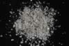

|
|
(For further information on spectroscopy, see:
http://speclab.cr.usgs.gov)
TITLE: Pyrophyllite PYS1A DESCRIPT
DOCUMENTATION_FORMAT: MINERAL
SAMPLE_ID: PYS1A GDS29
MINERAL_TYPE: Phyllosilicate
MINERAL: Pyrophyllite
FORMULA: Al2Si4O10(OH)2
FORMULA_HTML: Al2Si4O10(OH)2
COLLECTION_LOCALITY: Staley, NC
ORIGINAL_DONOR: Bruce Hemingway
CURRENT_SAMPLE_LOCATION: USGS Denver Spectroscopy Laboratory
ULTIMATE_SAMPLE_LOCATION: USGS Denver Spectroscopy Laboratory
SAMPLE_DESCRIPTION:
less than 850um
Hand samples are clusters of white radiating acicular crystals which appear pure.
Salisbury, J. W., Walter, L. W., and Vergo, N., 1987, Mid-Infrared (2.1-25µm) Spectra of Minerals: First Edition, U.S. Geological Survey Open File Report 87-263.
IMAGE_OF_SAMPLE:

END_SAMPLE_DESCRIPTION.
XRD_ANALYSIS:
Pure pyrophyllite.
Salisbury, J. W., Walter, L. W., and Vergo, N., 1987, Mid-Infrared (2.1-25µm) Spectra of Minerals: First Edition, U.S. Geological Survey Open File Report 87-263.
END_XRD_ANALYSIS.
COMPOSITIONAL_ANALYSIS_TYPE: XRF # XRF, EM(WDS), ICP(Trace), WChem
| COMPOSITION KEYWORD |
Oxide ASCII |
Amount | Weight Percent, % |
Oxide html |
|---|---|---|---|---|
| COMPOSITION: | SiO2 | 66.32 | wt% | SiO2 |
| COMPOSITION: | TiO2 | 0.01 | wt% | TiO2 |
| COMPOSITION: | Al2O3 | 28.27 | wt% | Al2O3 |
| COMPOSITION: | Fe2O3 | 0.32 | wt% | Fe2O3 |
| COMPOSITION: | FeO | 0.03 | wt% | FeO |
| COMPOSITION: | MgO | 0.07 | wt% | MgO |
| COMPOSITION: | Na2O | 0.05 | wt% | Na2O |
| COMPOSITION: | K2O | 0.02 | wt% | K2O |
| COMPOSITION: | H2O+ | 4.94 | wt% | H2O+ |
| COMPOSITION: | Total | 100.03 | wt% |
COMPOSITION_TRACE:
COMPOSITION_DISCUSSION:
See additional discussion in:
Salisbury, J. W., Walter, L. W., and Vergo, N., 1987, Mid-Infrared (2.1-25µm) Spectra of Minerals: First Edition, U.S. Geological Survey Open File Report 87-263.
END_COMPOSITION_DISCUSSION.
MICROSCOPIC_EXAMINATION:
END_MICROSCOPIC_EXAMINATION.
SPECTROSCOPIC_DISCUSSION:
END_SPECTROSCOPIC_DISCUSSION.
SPECTRAL_PURITY: 1a2a3a4a # 1= 0.2-3, 2= 1.5-6, 3= 6-25, 4= 20-150 microns
| LIB_SPECTRA_HED: | where | Wave Range | Av_Rs_Pwr | Comment |
|---|---|---|---|---|
| LIB_SPECTRA: | splib04a r 4060 | 0.2-3.0µm | 200 | g.s.= 25 µm |
| LIB_SPECTRA: | splib04a r 4071 | 0.2-3.0µm | 200 | g.s.= 125 µm |
| LIB_SPECTRA: | splib05a r 5718 | 0.2-3.0µm | 200 | g.s.= |
| LIB_SPECTRA: | splib05a r 5731 | 1.3-5.3µm | 200 | g.s.= |
| LIB_SPECTRA: | splib05a r 5771 | 0.2-3.0µm | 200 | g.s.= |
| LIB_SPECTRA: | splib06a r 18788 | g.s.= | ||
| LIB_SPECTRA: | splib06a r 18801 | g.s.= | ||
| LIB_SPECTRA: | splib06a r 18841 | g.s.= | ||
| LIB_SPECTRA: | splib06a r 18885 | g.s.= | ||
| LIB_SPECTRA: | splib06a r 18898 | g.s.= |
{kind=link}